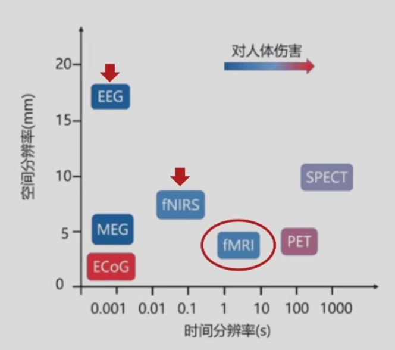
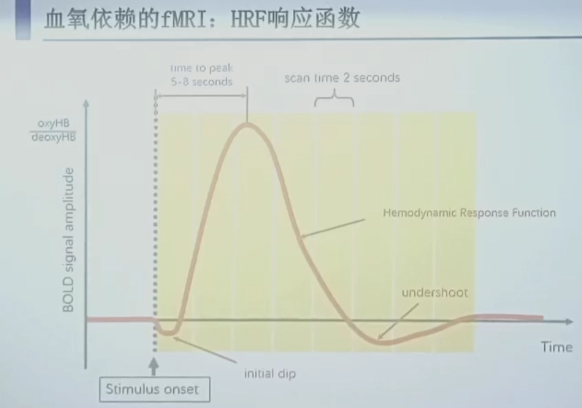
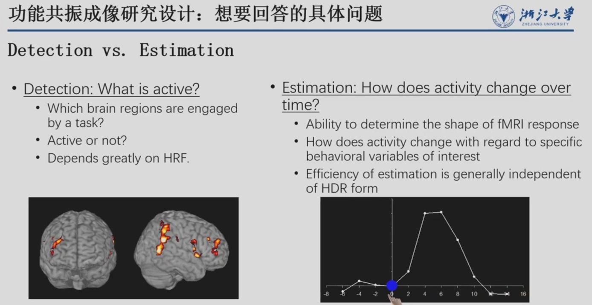
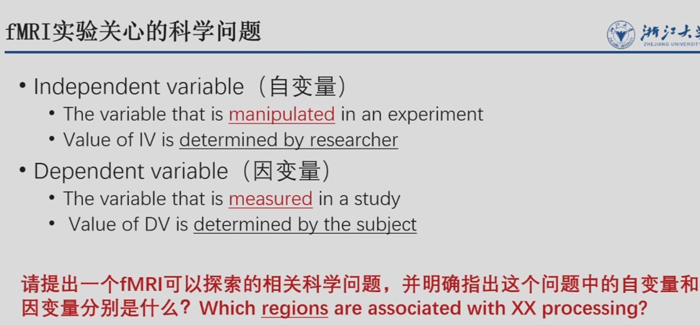
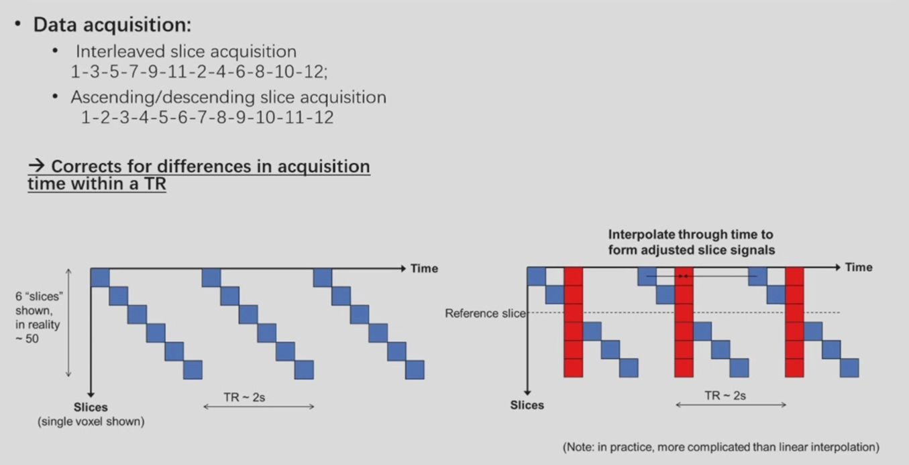
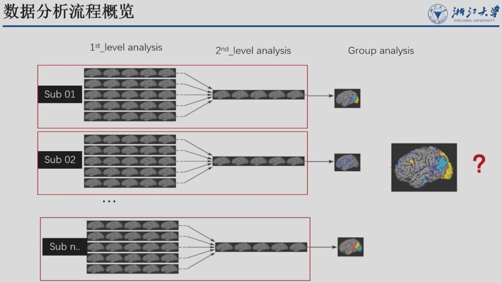
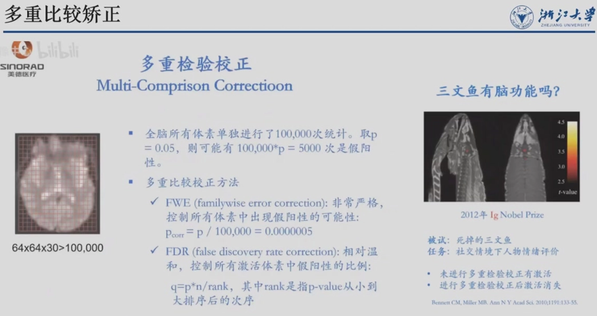

fMRI

磁共振成像的两大类
- 结构像：扫描大脑物理结构，区分灰质与白质，观察沟回（“照相机”）。T1常见
- 功能像：观察大脑在不同状态下的活动情况。T2常见
MRI优势
- 无创（非侵入式）
- 高空间分辨率：约2毫米左右，擅长回答 “where”（哪个脑区参与活动）
- 可检测深部脑信号：如海马、杏仁核等
MRI核心硬件

主磁体：决定成像质量
“基石”，产生高强、均匀磁场 3T最常见<再高一点动物常见>
为什么不能越高越好？①技术②对人体影响（眩晕等副作用）
实现：低温超导（液氦-270℃左右）
梯度系统：决定成像性能（→成像快慢/时间分辨率）
“发动机”，成像快慢&&梯度编码、空间定位 XYZ轴施加梯度磁场
Z轴用于层面选择，XY轴用于层内定位
射频系统：成像的核心过程
“雷达”，激发人体共振，采集MR回波信号 最终实现成像
谱仪系统
“大脑”，组织协调，各模块时钟协同
辅助设备：实际研究过程的操作 p.s.所有设备都是核磁兼容的
成像原理
MRI成像原理

氢核自旋
对氢质子进行成像 存在于游离态水分子
氢核自旋产生磁化矢量，方向随机，抵消，不产生宏观磁化矢量
放进主磁场：发生进动【进动频率∝磁场强度】，进动产生宏观纵向（水平方向随机任旧抵消）矢量M（与主磁场同向）
宏观纵向M非常小，无法直接用于成像
射频系统RF
发射RF：（垂直方向上发射）产生共振，纵向M消失，形成横向M
撤去RF：散相产生横向弛豫T2<横向M快速衰减到0> 与 纵向弛豫T1<纵向M逐步恢复>
T1弛豫时间：恢复到63%
T2弛豫时间：衰减到37%
氢含量不同弛豫时间不同
信号采集时M越大，成像越亮 <得到了一张黑白图>
Info
不同组织T1 T2值不同，加权成像
T1值越大（e.g.水），纵向M恢复慢，MR信号强度越低（黑）
T2值大（e.g.水），横向M减少慢，MR信号高（白）

Q：为什么要用两种不同的方式成像？
- 相互验证，准确性问题
- （两种像通常情况下是黑白相反的，但并不是完全对应）
- T1解剖结构清晰，灰白质对比好 时间：s级
- 区别组织边界明显
- 脂肪明显
- T2病理改变敏感，液体和病变显示为亮信号 时间：ms级
- 对水的显示特别亮，那么就对水肿这种自由水相关病变非常敏感
- T1解剖结构清晰，灰白质对比好 时间：s级
Q：T1 T2不同的时间特征会不会跟是否应用于功能成像相关？

TR决定时间分辨率
p.s.TR 是指两次连续的扫描（即采集整幅大脑图像）之间的时间间隔【注意不是“一次完整扫描的总时长”】
fMRI成像原理：BOLD
- 全称：血氧水平依赖信号
- 基本原理：
- 脑区活动 → 耗氧量增加 → 血氧血红蛋白含量变化 → 引起微弱磁场变化 thus fMRI检测该变化
- 重点：fMRI不直接测量神经放电，而是测量血氧代谢的变化（神经血管耦合）
BOLD信号是fMRI最常用的信号，原理与近红外（fNIRS）类似。
HRF
1. HRF函数响应函数

大脑对一次刺激引发的BOLD信号随时间变化的曲线
p.s.也可能是引起一个非常强的抑制信号
- 关键时间点：
- 刺激出现后5~8秒信号达到峰值（不是瞬时的！）
- 整个HRF持续约16~20秒才能回到基线
- fMRI信号有延迟性，解释数据时必须往前推诱发的时刻
- 实验设计必须考虑HRF的时间特性
2. HRF的线性叠加性
- 多个刺激间隔足够近时，它们引发的BOLD信号会线性叠加
- 这是组块设计和快速事件相关设计的理论基础
BOLD-fMRI成像质量


实验设计
实验设计的基本思路
-
明确研究问题（决定对信号时空分辨率的要求）
detection（足够的强度） VS estimation（足够的时间去呈现）

-
提出研究假设（可证伪，支持xx；不支持xx）
- 实验设计（共性/特性问题）

常见实验设计类型
1. 组块设计
- 做法：一段时间内持续做同一类任务（如30秒任务，30秒休息）
- TEST-REST得到任务相关的信号
- 优点：
- 检测效能最强（信号叠加后更明显）
- 分析相对简单（任务期 vs 休息期的均值比较）
- 缺点：
- 容易受信号漂移（block是有一段时间的，磁场等条件可能会发生变化）影响
- 存在期望效应（被试知道接下来是什么任务）
-
组块时长：15~20秒（太短回不到基线，太长相同时间内采样次数少i.e.效率问题疲劳问题）
考虑①信号特征②被试能够接受的最大时长
有些实验没办法block i.e.每个刺激是唯一的、不可重复的情况


2. 事件相关设计
慢速事件相关
- 每个刺激间隔足够长（如20秒），保证HRF完全回到基线
- 优点：非常清晰
- 缺点：效率低，一分钟只能呈现3个刺激，被试容易胡思乱想
快速事件相关（更常用）
- 刺激持续短（平均4~6秒），以随机化的间隔呈现
- 关键要求：刺激顺序和间隔必须是随机化的，否则无法通过反卷积分离信号
- 优点：效率高、更自然、可以事后根据被试行为（如记住vs忘记）分类分析
通过叠加平均得到单个事件引发的大脑活动。
-
jitter处理：随机化刺激间隔
避免相邻刺激的血流动力学响应完全重叠，从而允许使用统计模型分离出每个事件对应的脑响应，提升估计效率。
快速高效的代价是：BOLD信号还没完全回到基线，下一个事件就开始了。需要靠精细的时间信息，把不同事件的信号从互相重叠的曲线里拆分开来。
Tip
💡
BLOCK是一个极端，慢速事件相关也是，快速事件相关取了个中间值
3. 混合设计
BLOCK里嵌套 快速事件相关
信噪比

减法原则
- 实验条件 = 包含感兴趣成分的任务
- 对照条件 = 除感兴趣成分外，包含尽可能多的其他成分
- 两者相减 → 得到感兴趣成分对应的脑活动
数据采集
确定扫描序列：各项成像参数提前确定
任务呈现所需要的设备需要提前测试
2位主试：被试引导（换衣服，知情同意，在外面就开始解释了）+fMRI扫描
-
标准化指导语
标准化的，保证每个人接触到的都是一样的
把流程告诉他很重要，知道了就不会慌
-
保持良好沟通
比如，疲惫就休息【但是不能出来，出来再进去要重新扫描】
-
填写实验记录单
记录与被试相关的，任何可能影响实验结果的事件
-
实时头动检测
头动对影像的影响很大。场越强，成像越清晰头动影响越大。某些个体e.g.ADHD、老年人很难做fMRI。
说话等其他部位动也会引起头动。
数据分析
预处理
噪音
图片配准
常见数据格式：DICOM&NIFTI
Visually check

①匀质②形状（异物）
Main Processing Steps
-
Slice timing correction：层时校正
常见的拍法：顺序拍/间隔拍
大脑是一层一层拍的，每层之间有时间差，校正就是把这个时间差给“抹平”，让所有层的时间对齐



-
Head motion correction
头动不大的情况下也是可以接受的，进行校准即可。
边缘容易受到影响
-
Normalization（registration）：标准化
across subjects跨被试 across modalities of images跨模态 把不同人的大脑图像变形对齐到同一个标准模板上。i.e.模板对齐，p.s.模板来自于 [常模 or 20个人当场平均一下] 跟T1像【高清】配准（把功能像配到结构像） 
体素voxel（fMRI成像单位 约三万i.e.分辨率）
三种配准方法：
landmark：粗糙，只找几个标志点对齐。
volume（体素）：常用，精细程度一般。一个体素一个体素地去匹配，让变形后的大脑和模板的亮度差异最小化
surface：算法重建表面，对接标准模板
-
Smoothing：平滑
用空间上相邻的几个体素（voxel）的信号平均值，来代替原来单个体素的信号值。 thus：噪声被抑制了，真实信号更突出，但图像变模糊了。
p.s.有一些实验不需要，比如表征多模态分析不能做（因为它要区分体素集合之间的精细反应模式）
数据分析流程

-
1st-level analysis：针对单个人（比如孙子一个人）的数据，看他大脑哪些体素在任务期间比休息时更亮。
针对每个被试单独进行，目的是建立一般线性模型（GLM），估计各条件下的脑活动，并通过设定contrast提取感兴趣的效应。
-
2nd-level analysis：个体内的统计，得到一个更可靠的个体激活图
第一级分析只是初步估计，第二级会把一个人里面多次扫描（比如同一个任务重复了好几遍）的信号再平均、再检验，得出这个人的“确定性”激活结果
-
group analysis：把所有被试的个体统计结果拿过来，放到同一个标准空间里，看整个群体平均下来哪些脑区是真的激活。

多重比较矫正(非常重要)

对10万个体素做检验，即使大脑完全没有激活，纯属噪声，我们也会看到大约 10万 × 0.05 = 5000个体素被错误地报告为“激活”
fMRI一定要做